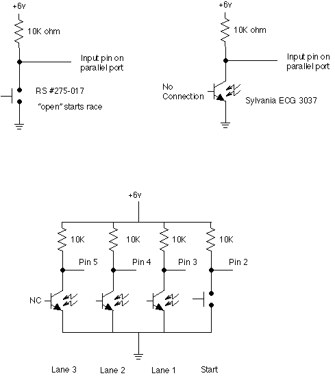

Well, okay, maybe that's a bit rash. It is the least expensive electronic
pinewood derby timer I've ever found! In fact that's the reason
this project exists. As I looked through Scouting magazine and
on the Internet the least expensive timer I could find was approximately $160
per lane. I thought that was a bit pricey for something as simple
as a timer for a pinewood derby. My timer cost about $25 total for three
lanes, the most expensive component being the lane sensors at about $3 each.
I was the committee chairman of a Cub Scout pack in Provo, Utah (Cub Scout
Pack 51, a community sponsored unit). Each year we spent about $50 to
rent an electronically timed Pinewood derby track. After a couple of years
of asking (begging) I finally convinced one of the fathers in the pack to build
the physical track. My part of the deal was to build the electronics to
time the cars. A friend at work who is a hardware engineer was willing
to help with the hardware design so that left me to construct the hardware and
to write the software.
The Pack purchased the lumber, screws, bolts, and other hardware to construct
the regulation Cub Scout Pinewood Derby track as described in The Cub Scout
How-To Book. This track has three lanes and is made from two sheets
of 4'x8' plywood making the track 32 feet long by 2 feet wide. The total
cost of materials for the physical track was $50. I should warn you that
it took about 2 months of hard work in the evenings and weekends to finish construction
of the track.
The two most important features of the track are first, that it has room
below the track at the finish line to allow the cable from the lane sensors
to pass out from under the track without being crushed or bent too severely.
Second, the start gate is operated automatically
rather than manually. By this I mean that the lowering (or starting) action
of the gate should be operated mechanically rather than by people power.
For example, on our track the gate is held in the "up" position by
a person and then simply released. A rubber band pulls the gate down out
of the way of the cars to allow the race to start. This guarantees that
the gate is lowered at the same speed for each race.
If your gate is operated by a person rather than a mechanical system (such
as our rubber band) then the race results can be significantly altered by the
starter not lowering the gate at the same speed each time. Since the computer
software measures races down to better than 1/1,000,000th of a second, the computer
can easily detect this starting gate difference at the finish line.
The only other note is the need for a steady source of
light placed over the track pointing at the lane sensors. I use a cheap clip
on lamp to do the job (about $2 at your local hardware store). It must be an
incandescent light (a regular light bulb), not florescent. The computer can
"see" the 60 Hz power pulses in a florescent tube and will mistake
them for race finishes. You can clip this light onto the back of a chair and
shine it at the track. Anything that will flood the light sensors with steady
light will work.
The Electronics
I reasoned that since I had a laptop computer that I was willing to use to time
the cars that the hardware shouldn't be that expensive. All it needed
to do was recognize when the race started and then register each car as it crossed
the finish line. It didn't seem to me that this needed to cost $160 per
lane! By using the laptop computer to do all the decision making and timing
I could reduce the "external" hardware to a very minimal set.
The Hardware
In the following example from the source code you can see that the software
supports the parallel port as the input device to the PC. The software makes
implicit assumptions that the start sensor and lane sensors are in bit order
on the port. So, as seen below, the start switch should be hooked to pin 15
which is bit 0 of the status port (or to pin 2 which is data bit 0). The lane
sensors should be hooked up in order starting with pin 13 (or pin 3).
The safer choice is to use the status port bits (pins 15, 13, 12, 10, 11)
because all parallel ports support input from these pins. Some parallel ports
also support input from the data bits (pins 2-9). These are the ECP/EPP ports.
They are also known as enhanced parallel ports or bi-directional parallel ports.
The only advantage to using the data bits over the status bits is that there
are more data bits which means more inputs and thus more lanes. If you are building
the standard three lane track I'd strongly encourage you to use the status bits.
// In the following comments two pin numbers are listed. The actual
pin // that will be read depends on the setting of the INPUT_SOURCE
parameter. // If it is set to 1, then pins 2-9 are used, if
0 then pins 15, 13, etc. are // used. This setting is based
on two things: 1) if the port address for // the printer is
0x3BC then we always use 15-11. 2) If the // command line switch
'T' is specified as 0 we always use 15-11, if it is 1 // then
we use pins 2-9. // Pins 15-11 are the safest set and work
on all ports, pins 2-9 only work // under certain circumstances,
but it gives you 3 more bits. #define START_BIT
0x01 // pin 2 or 15 #define
LANE1_FINISH 0x02
// pin 3 or 13 #define LANE2_FINISH 0x04
// pin 4 or 12 #define LANE3_FINISH 0x08
// pin 5 or 10 #define LANE4_FINISH 0x10
// pin 6 or 11 #define LANE5_FINISH 0x20
// pin 7 #define LANE6_FINISH 0x40
// pin 8 #define LANE7_FINISH 0x80
// pin 9
Lane Sensors
The physical lane sensors are simple NPN phototransistors (Sylvania part # ECG
3037 or NTE3037) hooked to the parallel port input pin with a pull-up resistor.
The wiring for each lane is: Input pin to transistor collector to resister to
positive; Transistor emitter to ground. See the files section of the
forum for transistor parts sources.
Start Sensor
The connection of the start switch is exactly identical except that the transistor
is replaced with the switch (see schematic
below). This switch can be any normally open momentary contact switch
such as Radio Shack #275-1547.
The type of switch you use will depend on the way your start gate is arranged.
In our case we use a roller lever switch (RS # 275-017) mounted on the side
of the track that is engaged when the gate is in the "up" or starting
position. When the gate is lowered to allow the race to start the contact
is broken. For accurate timing it is vital that the start gate be operated
mechanically rather than manually (see note above).
Ground Lines
Pins 18-25 on the DB25 connector that goes to the computer need to be hooked
to ground on the circuit. You need to hook the ground from the circuit
to any/all of the DB25 pins 18-25. These are all ground lines on the DB25
connector. Note that on some laptops do not connect all the pins (18-25)
to ground. Sometimes only some of the pins are hooked up. To make
sure that you get a good ground connection, I suggest that you tie all the pins
(18-25) on the connector together and hook that to ground on the circuit.
Schematic
Here's a picture of how each sensor is connected:

Note that in this schematic the pin numbers for the data pins are listed.
You should substitute the proper pin numbers depending on whether you
are using the status pins (suggested) or the data pins.
You can get a printable copy of the full schematic in PDF format here
(about 90K).
This schematic is setup for status pin input and includes an optional power
supply section.
Parts List
Lane Sensor (one per lane), $3 each
NPN Phototransistor, Philips Sylvania ECG 3037 or equivalent (NTE3037)
Specifications:
VCBO: 50V
VCEO: 25V
IC: 50ma
I Dark: 500na
I Light: 10ma
PT: 150mw
See the files section of the forum for a list of
parts sources for the transistor.
Power Supply, $8
6 volt, 150ma "wall wart" AC adapter, Radio Shack #273-1454
I use a roller level switch (Radio Shack #275-017) but you can use any
normally open, momentary contact switch depending on the design of your
start gate and track.
Start Sensor Connection Wire, $4
Measure how long your track is and add 5 to 10 feet depending on where
you will position your computer and electronics. Go to Radio Shack
and purchase the least expensive spool of stranded, 2-conductor wire that
meets your needs. You should be able to find a spool for around $4
(example: 50 feet of 24 gauge stranded 2-conductor speaker wire, Radio Shack
#278-1301, $3.19).
NOTE: Only purchase stranded-conductor (not solid-conductor)
wire. Stranded conductor wire is made up of several smaller wires
twisted together. This wire is much more tolerant of the bending and
unbending that will occur as you use the track.
Misc., $???
Other miscellaneous components you may need include: a circuit board
to mount the components on (a 4 inch square board should be plenty); a connector
to plug into the back of your computer (DB-25 Male/Pin); a cable to stretch
from the circuit board to the back of the computer; a few feet of small
gauge stranded hookup wire to connect between the circuit board and each
lane sensor; solder; soldering iron; etc.
Most of this stuff should be laying around in your junk box if you are
any kind of hardware geek at all. If you have to borrow or purchase
a soldering iron to complete this project then I suggest that you beg some
help, rather than a soldering iron, from a friend.
Clip on lamp, $2
As noted under The Track above you need to have
a steady source of light for the sensors to operate correctly. I use an
inexpensive aluminum shell clip-on lamp that I picked up at the hardware
store.
Timer Boards For Sale Sorry, no longer avaiable
Due to reduced requests for the boards over the last year, I've decided not to manufacture any more of these boards. I've now sold the last of my existing stock so they are no longer avaiable. Sorry for the inconvenience.
I now no longer have timer boards available for sale! These are single-sided,
bare boards, approximately 1.25 by 2 inches, that are ready to have the components
installed. These boards use the status pins for input so they support
at most 4 lanes. They are available two ways: just the bare board ($6), or the bare
board plus the right-angle DB-25 connector ($10). Either way, the 10K resistor
pack needed for the project is included with each board. In order to complete the project
you will need to add the following components:
Right angle, PC board mount DB-25 male connector (unless you buy the
kit that includes the connector, DigiKey
#182-725M-ND, $2.61 each + $5 order processing fee + shipping)
Power supply components: For
9 volt battery operation:
9 volt battery clip (I recommend the heavy duty ones: Radio
Shack #270-324, $2.49, pkg. of 5) -- OR -- For wall-wart
powered operation
+5 volt regulated supply
Start switch
Lane sensors (see parts list above or discussions on the forum for suggestions,
I used IR phototransistors, Radio
Shack #276-145, $1.49 each)
Hookup wire for start switch and lane sensors
You may not need the resistor pack OR the power supply components (9v battery
clip, Zener diode, 220 ohm resistor) if your computer
has built-in pull-up resistors. Unfortunately there is no simple way to
know if your computer has the built-in resistors. Some do, some don't.
If your computer does not have pull-up resistors your timer may operate
erratically or it may give sluggish results.
Make sure you insert all components on the BLANK side of the board.
The side with the traces is only used to solder parts in place. There
should be no components on the solder side (the side with the traces).
Insert the pins of the DB-25 connector through the holes and solder
the pins in place. It is not necessary to solder every pin. You
can simply solder all the pins with traces to them, plus a few on the opposite
end of the connector to help hold it in place. In order to keep the
board cost low I elected not to put a solder mask on the board. Make sure
that you don't accidentally solder bridge between two pins or between a
pin and a trace.
Insert the included resistor pack (the little blue package with six
pins in a row) into the holes in the middle of the board.
Note that one of the pads for the resistor pack is marked with a '1' on
the solder side of the board. This corresponds to the black dot on the resistor
pack. Make sure that the dot and the '1' are aligned. This usually
means that the printed words on the resistor pack face the DB-25 connector
(see this
picture for an example). Flip the board over and solder each pin in place. Again, make
sure that you do not solder bridge between a pin and an ajoining trace or
between two pins.
Solder wires onto the ends of the phototransistors for each lane. Use
one color of wire for the emitter and a different color for the collector
on each sensor. The collector side of the phototransistor is usualy marked
in some way (check the back of the package the component came in). This will make the next step MUCH easier and less
error prone. Use enough wire to reach from the back of your PC to the
track. I would use no more than 4 to 6 feet of wire on
each phototransistor. Each sensor should have the same amount of wire
as all the others for proper timing (electricity travels about 9 inches
per nanosecond so if one wire is 9 inches shorter than another, the timing
will be off by 1 nanosecond between the two sensors). I used a 6 foot length
of Cat 5e network cable to attach my sensors. This cable has four
pairs of wires inside. Since I only needed three lanes, I used the
forth pair to attach to the cord from my start gate.
Solder
(or otherwise attach) a wire to each side of the start gate switch. Remember
to leave enough wire to stretch all the way to the top of the track.
Refering to the solder side of the board, note that there are 5 rows
of two holes each on the right side of the board. These are the connections
for the start gate (at the bottom, notice the letters 'ST' to the right
of the holes) and the lane sensors (top row is lane 1, second row is
lane 2, third row is lane 4, fourth row is lane 3).
Notice that lanes 3 and 4 are out of order (in the photograph you can see
that I did not hook up lane 4 on my board). This was necessary in
order to line up the traces and make the board smaller. The right column
(looking at the solder side of the board) is the emitter connection (note
the word "emitter" at the top of the right column) which
is where the emitter from each sensor should be connected (the
wire from the collector goes in the other hole in each row). Flip
the board back over so you are looking at the component (blank) side and
then run the wires through the board. Flip the board back over and solder them in place making sure
to connect the emitter to the correct side on each row. Alternately,
you can solder a connector in place and then connect
the wires to that so that you can attach and remove the sensors easily.
While you are at it, solder the wire from the start gate to the bottom row of holes (polarity does not matter for the start gate, either wire in
either hole will work).
If you are using the 9 volt battery option, follow these instructions,
otherwise skip this step. Remember to insert the components from the
blank side of the board and solder on the side with the traces just as before.
Insert the RED lead from the 9 volt battery clip into the V+ pad and put
the BLACK lead into the pad marked 'GND'. Now flip the board over
and solder these leads in place. Next, insert a 220 ohm resistor into the
hole directly above the V+ pad. Put the other lead into the hole marked
'+5'. Flip the board over and solder the two resistor leads in place. Clip
off any excess resistor leads that are sticking out of the back of the board.
Now insert the Zener diode into the two slightly larger holes just above
where the resistor is. The Zener diode and the resistor should be parallel
to each other. The Zener diode is polorized as indicated by the black band
near one end of the glass part of the diode. This black band should be closer
to the DB-25 connector. Check that your components match the placement and
orientation of those on the board in the
photograph.
If you are using a regulated +5 volt supply follow these instructions,
otherwise skip this step. Refering to the solder side, note the markings for "+5" and "GND"
which indicate where the +5 line and the ground line from the power
supply should be connected. DO NOT hook the +5 supply up to the 'V+' pad
on the board. If you use a +5 regulated supply you do not need to install
the 9 volt battery clip, 220 ohm resistor or Zener diode.
Now, DOUBLE CHECK EVERYTHING!!! I refuse to be held responsible
for damage to your computer if you have not connected things correctly and
double checked your work. Make sure you have the +5 and ground from
the power supply connected correctly. Plug in the power supply or hook up
the 9 volt battery and
check the voltages with a meter to confirm this. While you are at it, check
that the various pins on the DB-25 change state properly when you cover
and uncover the phototransistors. You should be able to check this
quite easily using a volt meter.
ONLY after you have checked EVERYTHING and then DOUBLE
CHECKED everything should you attach the circuit to your PC. Run
the pinewood software and use the diagnostics screen to confirm that each
of the bits changes state properly when you cover and uncover each phototransistor.
Also check that the start gate switch changes states correctly. If
not, carefuly review the instructions above to make sure you haven't missed
anything. Check closely for phototransistors that are not hooked up correctly
(emitter and collector reversed).
The Software
The heart of the system is the software, designed to run under MS-DOS (not WinDoze),
that watches the sensors and manages the race. This software is fairly simple
in design. The major components are a configuration function which allows you
to specify which parallel port to use (the default is LPT1) and what pins to
read (default is status pins); an input function which reads the input signal
bits from the port; and a timing function which is able to read the 1.193Mhz
clock that all PCs use as their time base.
Wrapped around these basic functions is the simple logic which manages the
race. To start a race you must enter the number of cars to be raced. The cars
are numbered from 1 to 'n' (where 'n' is the number of cars) in no particular
order. There must be at least as many cars as your track has lanes (if you have
less cars, use the L command line option to tell the software you have less
lanes). The computer will begin the racing by having you put as many cars on
the track as you have lanes, starting with car #1 in lane 1 and car #2 in lane
2 and so on. The software then confirms that all the sensors are in the appropriate
state and then awaits the start of the race. Once the race has started the computer
waits for all the cars to cross the finish line. Once all the cars have crossed
the finish line the computer asks if it should record this race and move on
or if you want to rerun that heat. Once you record a race the computer will
instruct you to put on the next set of cars. The second race will simply shift
each car over one lane so car #2 will be in lane 1 and car #3 in lane 2 and
so on. This insures that each car races exactly once in each lane to eliminate
any variance in the speed of different lanes.
Quickly thinking through the problem should tell you that you will only run
as many races as you have cars (no matter how many lanes you have). This process
goes quite quickly for all but the largest packs. The average time for each
heat is somewhat less than 30 seconds if you are at all efficient. This means
that if you have a pack of 40 boys you will be done in under 20 minutes. This
is quite an improvement if you are used to manual racing using the elimination
heat system.
Also, if you think about it, on an electronically timed track adding more
lanes doesn't help. Every car has to run in every lane and you always run as
many races as you have cars. Therefore, save yourself time, money, effort and
energy and build only a three lane track. This allows enough cars to run at
any one time that the boys are still interested in the race but doesn't create
a major problem in construction, storage, etc. It also conveniently matches
the track plans in The Cub Scout How-To Book.
You can download a copy of the software immediately by joining the Pinewood
Derby Timer Forum (see the Forum section below) and
going to the files area. If you don't want to join the forum you can contact
me via
e-mail to obtain a copy of the software. However, I strongly
encourage you to join the forum!
There are three optional command line parameters to the program as follows:
Px = Set the port number to x (x is 1, 2 or 3 for LPT1, LPT2 or LPT3)
-- OR -- Pxxx = Set the port address to xxx (xxx is in hex) Tx =
Port type 0 or 1 (0 = read from status port, pins 15-11 or 1 = data port,
pins 2-9*) Lx = Set the number of lanes (default is 3)
* Note that the use of the data pins for input (option T1) requires an
EPP or ECP parallel port. These ports support bi-directional I/O on
the data pins. Most older computers do not have EPP/ECP ports.
If you are planning to use an older computer with a larger track (more than
4 lanes) you should confirm that it has an EPP/ECP port.
Here are some examples of using the various command line parameters
A:\> pinewood L4 Starts the program for a 4 lane track
A:\> pinewood P2 Starts the program using LPT2 instead of LPT1 (the default)
A:\> pinewood T1 Uses the data pins rather than the status pins
A:\> pinewood L4 T1 Combines two options: uses 4 lanes on the data pins
If you run the software and use the diagnostic function (3) it will show
you what port address you are using and what pins you are using. It also shows
the current (real-time) state of all the pins so you can see each bit change
back and forth as needed. This is very helpful for diagnosing problems with
the track installation.
Here's an example output from the diagnostics function:
The bits displayed are, from RIGHT to LEFT, Start Gate, Lane 1, Lane
2, Lane 3 ... (this is opposite to the order listed in the 'Input: '
line above, e.g. the right hand bit is pin 15 in the above example). All bits
should be at 0 in the normal starting state for a race (start gate closed, all
lanes clear).
Presently the software has an arbitrary limit of 100 cars.
Pictures
Several people have asked to see pictures of the track and I've finally relented.
Here are several pages that show close up shots of different parts of the track
and electronics. These pages each contain one or two large images (1024x768,
about 140K each) and may take a while to load if you have a slow connection.
There is an electronic forum, hosted by Yahoo, where we can all meet and discuss
the pinewood derby timer, software and hardware. Please consider joining the
forum and adding your valuable input to the discussions there.
The forum features the following:
Message board
Real-time chat area
Files area
Download the latest version of the pinewood software here!
Files and instructions for creating a DOS boot disk
Lists of parts sources for the transistors
Frequently asked questions (FAQ) file
Free Windows based software is available too
Photos area (post photos of your track, timer, derby, etc.)
Bookmarks area (share bookmarks to your favorite Pinewood Derby related
sites)
Database area (maybe we could post the fastest times from each derby?)